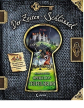

Reise ins Mittelalter: Lea und Tim sind bei Opa zu Besuch, als sie im Buchergestell ein Holzturchen mit einem goldenen Schlussel finden. Sie offnen die Tur und finden sich in Opas Gewolbekeller wieder, allerdings stellen sie fest, dass sie plotzlich ins Mittelalter zuruckversetzt worden sind. Sie sind mitten in einen Kampf gegen den teuflischen Baron der Burg geraten, und es gibt fur Lea und Tim jede Menge zu tun, um die Bevolkerung von seiner Herrschaft zu befreien. Das Buch ist Sach- und Geschichtenbuch gleichzeitig und versteht es, auf unterhaltsame und Spaßnende Art und Weise, das Leben auf einer mittlelalterlichen Burg zu erzahlen. Auf jeder Seite sind weitere Details zu Wappen, Waffen oder Informationen zu Burgen des Mittelalters versteckt. Diese Zusatzinformationen sind meist in Klappen, Briefen, Karten oder herausnehmbaren Postern versteckt und es ist der Leserin / dem Leser selb